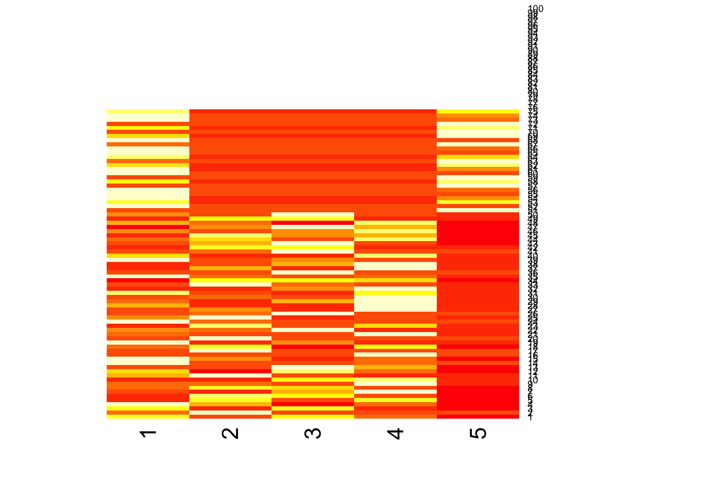
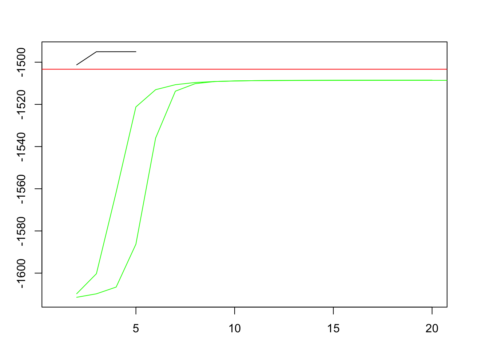
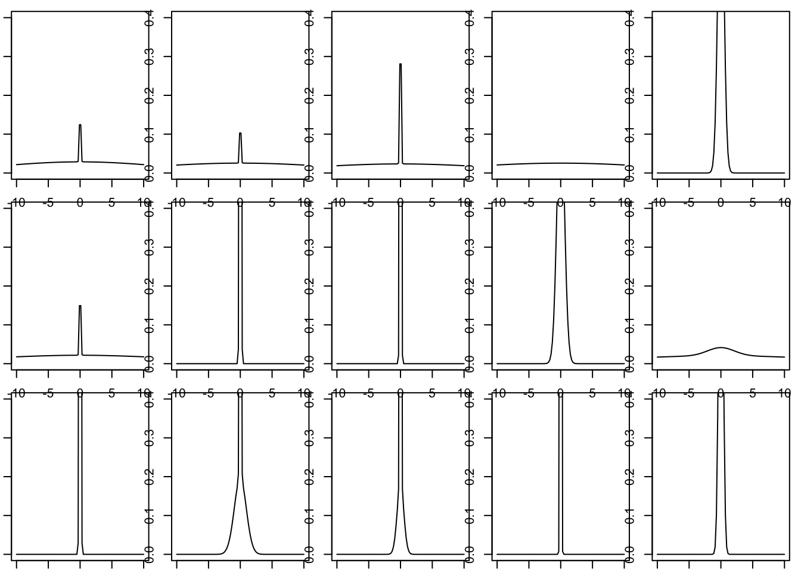

Last updated: 2019-03-09
Checks: 6 0
Knit directory: misc/analysis/
This reproducible R Markdown analysis was created with workflowr (version 1.2.0). The Report tab describes the reproducibility checks that were applied when the results were created. The Past versions tab lists the development history.
Great! Since the R Markdown file has been committed to the Git repository, you know the exact version of the code that produced these results.
Great job! The global environment was empty. Objects defined in the global environment can affect the analysis in your R Markdown file in unknown ways. For reproduciblity it’s best to always run the code in an empty environment.
The command set.seed(12345) was run prior to running the code in the R Markdown file. Setting a seed ensures that any results that rely on randomness, e.g. subsampling or permutations, are reproducible.
Great job! Recording the operating system, R version, and package versions is critical for reproducibility.
Nice! There were no cached chunks for this analysis, so you can be confident that you successfully produced the results during this run.
Great! You are using Git for version control. Tracking code development and connecting the code version to the results is critical for reproducibility. The version displayed above was the version of the Git repository at the time these results were generated.
Note that you need to be careful to ensure that all relevant files for the analysis have been committed to Git prior to generating the results (you can use wflow_publish or wflow_git_commit). workflowr only checks the R Markdown file, but you know if there are other scripts or data files that it depends on. Below is the status of the Git repository when the results were generated:
Ignored files:
Ignored: .DS_Store
Ignored: .Rhistory
Ignored: .Rproj.user/
Ignored: analysis/.RData
Ignored: analysis/.Rhistory
Ignored: analysis/ALStruct_cache/
Ignored: data/.Rhistory
Ignored: docs/figure/.DS_Store
Untracked files:
Untracked: .dropbox
Untracked: Icon
Untracked: _workflowr.yml
Untracked: analysis/GTEX-cogaps.Rmd
Untracked: analysis/SPCAvRP.rmd
Untracked: analysis/cormotif.Rmd
Untracked: analysis/eQTL.perm.rand.pdf
Untracked: analysis/ieQTL.perm.rand.pdf
Untracked: analysis/m6amash.Rmd
Untracked: analysis/mash_bhat_z.Rmd
Untracked: analysis/mash_ieqtl_permutations.Rmd
Untracked: analysis/mixsqp.Rmd
Untracked: analysis/pseudodata.Rmd
Untracked: analysis/sc_bimodal.Rmd
Untracked: analysis/svd-timing.Rmd
Untracked: analysis/test_sparse.Rmd
Untracked: analysis/z.txt
Untracked: code/multivariate_testfuncs.R
Untracked: data/4matthew/
Untracked: data/4matthew2/
Untracked: data/E-MTAB-2805.processed.1/
Untracked: data/ENSG00000156738.Sim_Y2.RDS
Untracked: data/GDS5363_full.soft.gz
Untracked: data/GSE41265_allGenesTPM.txt
Untracked: data/Muscle_Skeletal.ACTN3.pm1Mb.RDS
Untracked: data/Thyroid.FMO2.pm1Mb.RDS
Untracked: data/bmass.HaemgenRBC2016.MAF01.Vs2.MergedDataSources.200kRanSubset.ChrBPMAFMarkerZScores.vs1.txt.gz
Untracked: data/bmass.HaemgenRBC2016.Vs2.NewSNPs.ZScores.hclust.vs1.txt
Untracked: data/bmass.HaemgenRBC2016.Vs2.PreviousSNPs.ZScores.hclust.vs1.txt
Untracked: data/finemap_data/fmo2.sim/b.txt
Untracked: data/finemap_data/fmo2.sim/dap_out.txt
Untracked: data/finemap_data/fmo2.sim/dap_out2.txt
Untracked: data/finemap_data/fmo2.sim/dap_out2_snp.txt
Untracked: data/finemap_data/fmo2.sim/dap_out_snp.txt
Untracked: data/finemap_data/fmo2.sim/data
Untracked: data/finemap_data/fmo2.sim/fmo2.sim.config
Untracked: data/finemap_data/fmo2.sim/fmo2.sim.k
Untracked: data/finemap_data/fmo2.sim/fmo2.sim.k4.config
Untracked: data/finemap_data/fmo2.sim/fmo2.sim.k4.snp
Untracked: data/finemap_data/fmo2.sim/fmo2.sim.ld
Untracked: data/finemap_data/fmo2.sim/fmo2.sim.snp
Untracked: data/finemap_data/fmo2.sim/fmo2.sim.z
Untracked: data/finemap_data/fmo2.sim/pos.txt
Untracked: data/logm.csv
Untracked: data/m.cd.RDS
Untracked: data/m.cdu.old.RDS
Untracked: data/m.new.cd.RDS
Untracked: data/m.old.cd.RDS
Untracked: data/mainbib.bib.old
Untracked: data/mat.csv
Untracked: data/mat.txt
Untracked: data/mat_new.csv
Untracked: data/paintor_data/
Untracked: data/temp.txt
Untracked: data/y.txt
Untracked: data/y_f.txt
Untracked: data/zscore_jointLCLs_m6AQTLs_susie_eQTLpruned.rds
Untracked: data/zscore_jointLCLs_random.rds
Untracked: docs/figure/eigen.Rmd/
Untracked: docs/figure/fmo2.sim.Rmd/
Untracked: docs/figure/newVB.elbo.Rmd/
Untracked: docs/figure/rbc_zscore_mash2.Rmd/
Untracked: docs/figure/rbc_zscore_mash2_analysis.Rmd/
Untracked: docs/figure/rbc_zscores.Rmd/
Untracked: docs/trend_files/
Untracked: docs/z.txt
Untracked: explore_udi.R
Untracked: output/fit.varbvs.RDS
Untracked: output/glmnet.fit.RDS
Untracked: output/test.bv.txt
Untracked: output/test.gamma.txt
Untracked: output/test.hyp.txt
Untracked: output/test.log.txt
Untracked: output/test.param.txt
Untracked: output/test2.bv.txt
Untracked: output/test2.gamma.txt
Untracked: output/test2.hyp.txt
Untracked: output/test2.log.txt
Untracked: output/test2.param.txt
Untracked: output/test3.bv.txt
Untracked: output/test3.gamma.txt
Untracked: output/test3.hyp.txt
Untracked: output/test3.log.txt
Untracked: output/test3.param.txt
Untracked: output/test4.bv.txt
Untracked: output/test4.gamma.txt
Untracked: output/test4.hyp.txt
Untracked: output/test4.log.txt
Untracked: output/test4.param.txt
Untracked: output/test5.bv.txt
Untracked: output/test5.gamma.txt
Untracked: output/test5.hyp.txt
Untracked: output/test5.log.txt
Untracked: output/test5.param.txt
Unstaged changes:
Modified: analysis/_site.yml
Deleted: analysis/chunks.R
Modified: analysis/eigen.Rmd
Modified: analysis/fmo2.sim.Rmd
Modified: analysis/newVB.Rmd
Modified: analysis/wSVD.Rmd
Note that any generated files, e.g. HTML, png, CSS, etc., are not included in this status report because it is ok for generated content to have uncommitted changes.
These are the previous versions of the R Markdown and HTML files. If you’ve configured a remote Git repository (see ?wflow_git_remote), click on the hyperlinks in the table below to view them.
| File | Version | Author | Date | Message |
|---|---|---|---|---|
| Rmd | 53d9a2c | Matthew Stephens | 2019-03-09 | wflow_publish(“miximash.Rmd”) |
This is my first attempt to code an EM algorithm for the miximash model using ash.
NOTES: - should edit ash to allow vloglik to be output directly
library(ashr)#' fix point function for miximash em algorithm
#' @param w an N by K matrix of weights w
#' @param pi a K vector of mixture proportions
#' @param Bhat an N by R matrix of observations
#' @param Shat an N by R matrix of standard errors
miximash.fixpt = function(w,pi,Bhat,Shat){
K = ncol(w)
N = nrow(w)
R = ncol(Bhat)
loglik = array(0,dim=c(N,K,R)) #matrix of loglikelihoods
#initialize glist
glist = vector("list",K)
for(k in 1:K){
glist[[k]] = vector("list",R)
}
for(k in 1:K){
for(r in 1:R){
a = ashr::ash(Bhat[,r],Shat[,r],weights = w[,k],outputlevel = 1,method="shrink",mixcompdist="normal",gridmult=2^0.25)
glist[[k]][[r]] = ashr::get_fitted_g(a)
loglik[,k,r] = ashr::calc_vloglik(glist[[k]][[r]],ashr::set_data(Bhat[,r],Shat[,r],alpha=0))
}
}
# compute the log-likelihood for each observation in each component
loglik.sum = apply(loglik,c(1,2),sum) # sums across 3rd dimension, which is R
loglik.max = apply(loglik.sum,1,max)
loglik.sum = loglik.sum - loglik.max# avoid overflow
w = t(pi*exp(t(loglik.sum))) # an N by K matrix of weights
w.sum = rowSums(w) # an N vector
w = w/w.sum
loglik.total = sum( log(w.sum) + loglik.max)
pi = colMeans(w)
return(list(w=w,pi=pi,loglik=loglik.total,glist=glist))
}
#' @param loglik_array an N by K by R array
#' @param pi a K vectro
miximash.loglik = function(loglik_array,pi){
loglik.sum = apply(loglik_array,c(1,2),sum) # sums across 3rd dimension, which is R
offset = apply(loglik.sum,1,max)
loglik.sum= loglik.sum - offset
lik = exp(loglik.sum)
sum(log(colSums(pi*t(lik)))+offset)
}
miximash = function(Bhat,Shat,w=NULL,tol=0.001,max_iter = 100){
N = nrow(Bhat)
R = ncol(Bhat)
if(is.null(w)){
w= array(runif(N*K), dim=c(N,K)) #initialize weights
}
pi= rep(1/K,K)
loglik=-Inf
state = list(w=w,pi=pi)
for(i in 1:max_iter){
state = miximash.fixpt(state$w,state$pi,Bhat,Shat)
loglik = c(loglik,state$loglik)
if( (loglik[i+1]-loglik[i]) < tol ) break;
}
return(list(state=state,loglik=loglik))
}Simulate some data with 5 conditions. The first group (1-50) have effects in 1-4. The second group (51-75) have effects in 1,5. The third group is null.
K = 3
N = 100
R = 5
sd = 16
set.seed(1)
B = matrix(0,nrow=N,ncol=R)
B[1:(N/2),1] = sd*rnorm((N/2))
B[1:(N/2),2] = sd*rnorm((N/2))
B[1:(N/2),3] = sd*rnorm((N/2))
B[1:(N/2),4] = sd*rnorm((N/2))
B[((N/2)+1):(3*N/4),1] = sd*rnorm((N/4))
B[((N/2)+1):(3*N/4),5] = sd*rnorm((N/4))
heatmap(B^2,Rowv=NA,Colv=NA)
Bhat = B + rnorm(N*R)
Shat = matrix(1,nrow=N,ncol=R)Set up glist containing true effects for testing
glist = vector("list",K)
for(k in 1:K){
glist[[k]] = vector("list",R)
}
# set up true values
glist[[1]][[1]] = normalmix(c(1),c(0),c(16))
glist[[1]][[2]] = normalmix(c(1),c(0),c(16))
glist[[1]][[3]] = normalmix(c(1),c(0),c(16))
glist[[1]][[4]] = normalmix(c(1),c(0),c(16))
glist[[1]][[5]] = normalmix(c(1),c(0),c(0))
glist[[2]][[1]] = normalmix(c(1),c(0),c(16))
glist[[2]][[2]] = normalmix(c(1),c(0),c(0))
glist[[2]][[3]] = normalmix(c(1),c(0),c(0))
glist[[2]][[4]] = normalmix(c(1),c(0),c(0))
glist[[2]][[5]] = normalmix(c(1),c(0),c(16))
glist[[3]][[1]] = normalmix(c(1),c(0),c(0))
glist[[3]][[2]] = normalmix(c(1),c(0),c(0))
glist[[3]][[3]] = normalmix(c(1),c(0),c(0))
glist[[3]][[4]] = normalmix(c(1),c(0),c(0))
glist[[3]][[5]] = normalmix(c(1),c(0),c(0))
loglik = array(0,dim=c(N,K,R)) #matrix of loglikelihoods
for(k in 1:K){
for(r in 1:R){
loglik[,k,r] = ashr::calc_vloglik(glist[[k]][[r]],ashr::set_data(Bhat[,r],Shat[,r],alpha=0))
}
}
loglik_oracle = miximash.loglik(loglik,c(0.5,0.25,0.25))
loglik_oracle[1] -1503.336w_true = array(0,dim=c(N,K))
w_true[1:50,1]=1
w_true[51:75,2]=1
w_true[76:100,3]=1Run miximash (twice from random; third time from truth)
s1 = miximash(Bhat,Shat)
s2 = miximash(Bhat,Shat)
s3 = miximash(Bhat,Shat,w=w_true) #initalize from truthpar(mfrow=c(1,1))
par(mai=.6*c(1,1,1,1))
plot(s3$loglik,type="l",ylim=c(min(s1$loglik[-1]),max(s3$loglik)),xlim=c(1,20))
lines(s1$loglik,col="green")
lines(s2$loglik,col="green")
abline(h=loglik_oracle,col="red")
x = seq(-10,10,length=100)
par(mfrow=c(3,5))
par(mai=.1*c(1,1,1,1))
for(k in 1:K){
for(r in 1:R){
plot(x,ashr::dens(s3$state$glist[[k]][[r]],x),type="l",ylim=c(0,0.4))
}
}
This was an initial test of the log-likelihood computations - could be useful as a unit test…
N= 8
K=2
R=3
glist = vector("list",K)
for(k in 1:K){
glist[[k]] = vector("list",R)
}
# set up N(0,0) and N(0,4)
glist[[1]][[1]] = normalmix(c(1),c(0),c(0))
glist[[1]][[2]] = normalmix(c(1),c(0),c(0))
glist[[1]][[3]] = normalmix(c(1),c(0),c(0))
glist[[2]][[1]] = normalmix(c(1),c(0),c(4))
glist[[2]][[2]] = normalmix(c(1),c(0),c(4))
glist[[2]][[3]] = normalmix(c(1),c(0),c(4))
loglik = array(0,dim=c(N,K,R)) #matrix of loglikelihoods
set.seed(1)
B = matrix(0,nrow=N,ncol=R)
B[1:(N/2),] = rnorm((N/2)*R,0,4)
Bhat = B + rnorm(N*R)
Shat = matrix(1,nrow=N,ncol=R)
for(k in 1:K){
for(r in 1:R){
loglik[,k,r] = ashr::calc_vloglik(glist[[k]][[r]],ashr::set_data(Bhat[,r],Shat[,r],alpha=0))
}
}
loglik[,1,]==dnorm(Bhat,0,1,log=TRUE) [,1] [,2] [,3]
[1,] TRUE TRUE TRUE
[2,] TRUE TRUE TRUE
[3,] TRUE TRUE TRUE
[4,] TRUE TRUE TRUE
[5,] TRUE TRUE TRUE
[6,] TRUE TRUE TRUE
[7,] TRUE TRUE TRUE
[8,] TRUE TRUE TRUEloglik[,2,]==dnorm(Bhat,0,sqrt(17),log=TRUE) [,1] [,2] [,3]
[1,] TRUE TRUE TRUE
[2,] TRUE TRUE TRUE
[3,] TRUE TRUE TRUE
[4,] TRUE TRUE TRUE
[5,] TRUE TRUE TRUE
[6,] TRUE TRUE TRUE
[7,] TRUE TRUE TRUE
[8,] TRUE TRUE TRUE
sessionInfo()R version 3.5.2 (2018-12-20)
Platform: x86_64-apple-darwin15.6.0 (64-bit)
Running under: macOS Mojave 10.14.1
Matrix products: default
BLAS: /Library/Frameworks/R.framework/Versions/3.5/Resources/lib/libRblas.0.dylib
LAPACK: /Library/Frameworks/R.framework/Versions/3.5/Resources/lib/libRlapack.dylib
locale:
[1] en_US.UTF-8/en_US.UTF-8/en_US.UTF-8/C/en_US.UTF-8/en_US.UTF-8
attached base packages:
[1] stats graphics grDevices utils datasets methods base
other attached packages:
[1] ashr_2.2-32
loaded via a namespace (and not attached):
[1] Rcpp_1.0.0 knitr_1.21 whisker_0.3-2
[4] magrittr_1.5 workflowr_1.2.0 MASS_7.3-51.1
[7] pscl_1.5.2 doParallel_1.0.14 SQUAREM_2017.10-1
[10] lattice_0.20-38 foreach_1.4.4 stringr_1.3.1
[13] tools_3.5.2 parallel_3.5.2 grid_3.5.2
[16] xfun_0.4 git2r_0.24.0 htmltools_0.3.6
[19] iterators_1.0.10 yaml_2.2.0 rprojroot_1.3-2
[22] digest_0.6.18 mixsqp_0.1-97 Matrix_1.2-15
[25] fs_1.2.6 codetools_0.2-15 glue_1.3.0
[28] evaluate_0.12 rmarkdown_1.11 stringi_1.2.4
[31] compiler_3.5.2 backports_1.1.3 truncnorm_1.0-8